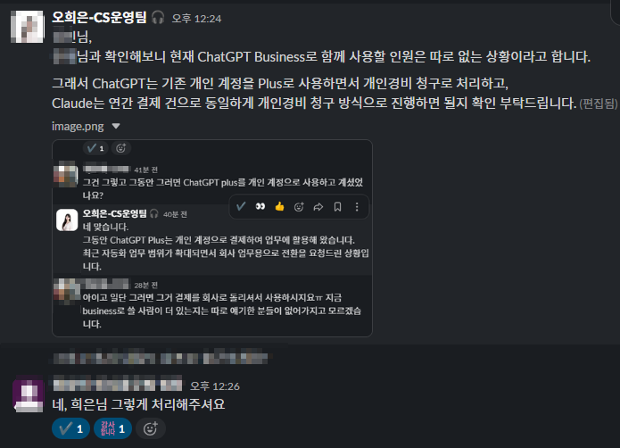

Automation
AI Usage
| 활용 영역 | 활용 방식 |
|---|---|
| FAQ 구조화 | Claude/GPT로 반복 문의 유형을 분류하고, 응대 기준 초안을 빠르게 구조화해 실제 운영 기준에 맞춰 수정 반영 |
| SOP 초안 작성 | 새로운 이슈 유형 발생 시 응대 기준 초안을 빠르게 생성하고, 실제 케이스에 맞게 수정해 SOP에 반영 |
| 계약서·약관 분석 | NotebookLM에 원문을 업로드해 관련 조항과 근거를 확인하고, Claude/GPT 초안과 교차 검토해 내부 기준과 맞지 않는 표현을 조정 |
| 정책 문구 검토 | GPT/Claude로 문구 초안을 정리한 뒤, NotebookLM으로 약관·정책 원문 근거를 재확인해 확정 표현과 책임 주체 표현을 조정 |
| 업무 보고 자동화 | 일일 운영 현황 집계와 보고 초안 작성에 AI를 보조 도구로 활용해 반복 작업 시간 단축 |
Outcome
Evidence
회사에는 Gemini Pro가 기본 제공되는 환경이었지만, 업무 유형에 따라 Claude·ChatGPT가 더 적합한 구간이 있다고 판단했습니다. 개인 비용으로 사용하던 AI 도구를 FAQ 구조화, 자동화 로직 설계, 약관·정책 문구 검토에 활용했고, 업무 필요성을 인정받아 비용 처리 방식으로 전환했습니다.

Relevance
커머스 플랫폼 운영에서는 반복 입력, FAQ 최신화, 정책 문구 검토, 파트너 기준 정리처럼 정확성과 속도가 함께 필요한 업무가 많습니다. 이 케이스는 AI를 답변 자동 생성이 아니라, 기준 문서화·원문 근거 검증·반복 업무 자동화에 연결해 운영 품질을 높인 사례입니다.
Insights
이 케이스에서 중요한 점은 AI를 많이 썼다는 것이 아니라, 업무 성격에 따라 도구의 역할을 나눴다는 점입니다. 초안과 구조화는 Claude/GPT로 빠르게 만들고, 약관·계약서·정책 문서는 NotebookLM으로 원문 근거를 확인했습니다. 운영 업무에서 AI는 사람의 판단을 대체하기보다, 기준을 더 빠르게 정리하고 놓칠 수 있는 근거를 다시 확인하게 해주는 보조 도구라고 생각합니다.